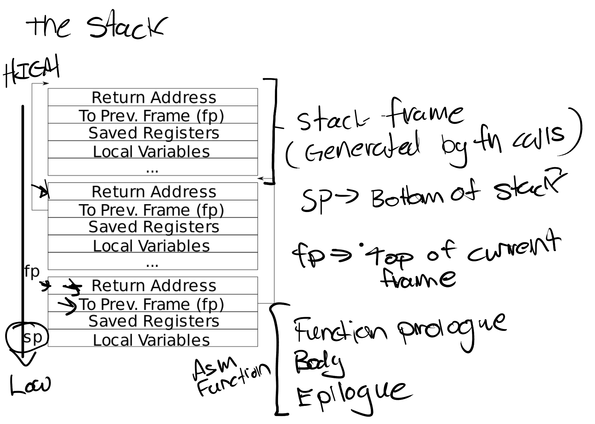
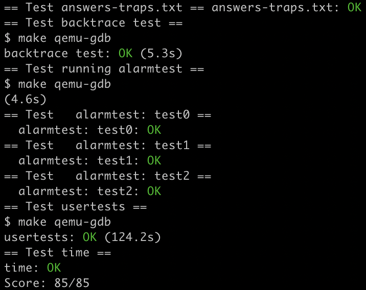

[xv6-mit-6.S081-2020]Lab4: traps
Lab: traps
https://pdos.csail.mit.edu/6.S081/2020/labs/traps.html
代码：https://github.com/xyfJASON/xv6-mit-6.S081-2020/tree/traps
RISC-V assembly
我们计算机组成原理课上学过 RISC-V 的汇编语言，所以这一节相对轻松。
Which registers contain arguments to functions? For example, which register holds 13 in main's call to
printf?user/call.asm 中有两行
li a2,13和li a1,12，我们可以看出a1,a2寄存器是存放printf的参数的地方。Where is the call to function
fin the assembly code for main? Where is the call tog? (Hint: the compiler may inline functions.)刚刚我们已经看到，
li a,12直接把f(8)+1算出来了，所以是编译器内联了它；另外，f函数里面的指令和g一模一样，说明编译器也内联了它。At what address is the function
printflocated?注释写的很清楚了：
0x630；如果没有注释的话也可以算出来，
auipc ra,0x0是将当前 pc 给了 ra，即 ra=0x30，那么jalr 1536(ra)能跳到printf，说明其位置是0x30+1536=0x630。What value is in the register
rajust after thejalrtoprintfinmain?jalr会将 pc+4 存储给指定的寄存器，反汇编语句里省略了指定寄存器，是因为默认给 ra，所以 ra=0x38。Run the following code.
1
2unsigned int i = 0x00646c72;
printf("H%x Wo%s", 57616, &i);What is the output? Here's an ASCII table that maps bytes to characters.
The output depends on that fact that the RISC-V is little-endian. If the RISC-V were instead big-endian what would you set
ito in order to yield the same output? Would you need to change57616to a different value?Here's a description of little- and big-endian and a more whimsical description.
很有意思的一道题。
%x是按 16 进制输出，57616=0xe110，所以输出的前半段是He110；ASCII 码中 0x64 对应
d，0x6c 对应l，0x72 对应r，又 RISC-V 小端存储（低地址存 0x72），且%s从低地址开始读取数据输出，所以会输出rld，于是输出的后半段就是World。如果是大端存储，那么
i=0x726c6400；但57616不用改动。In the following code, what is going to be printed after
'y='? (note: the answer is not a specific value.) Why does this happen?1
printf("x=%d y=%d", 3);前面说了，
a2寄存器是printf指令的第 2 个参数，所以应该会输出 a2 寄存器的值。
Backtrace
任务：在 kernelprintf.c 中添加一个 backtrace()，用于在出错时输出这之前栈中的函数调用。编译器会在每个栈帧中存入一个帧指针，指向调用者的帧指针。backtrace() 应该用这些帧指针来遍历栈并输出每个栈帧的保存的返回地址。
看到题目的时候，我对帧指针这个术语很迷惑，直到我看到了它的缩写 fp 才反应过来这是当前函数的栈底……然后我又对栈帧这个术语很迷惑，于是看了 lecture notes，哦，原来是当前函数用的这一段栈啊……notes 里面画的很清楚栈里面都有哪些内容：

这些存放 prev frame 的地址可以看成构成了一个链表，所以写 backtrace 遍历这个链表即可。但是终止条件是什么呢？根据提示，xv6 给每个栈分配一页的大小，所以一直把它所在的页跳完了就终止。
1 | |
Alarm
任务：给 xv6 加一个功能——在进程使用CPU时间时定期发出警告。这对于限制 CPU 密集型（计算密集型）进程的占用时间，或对于在计算过程中有其他定期动作的进程可能很有用。更广泛的说，我们将实现一个用户级中断/异常的处理程序。
我们需要添加一个 sigalarm(interval, handler) 系统调用。如果一个应用调用了 sigalarm(n, fn)，则该应用每耗时 n 个 ticks，内核应该使之调用 fn，fn 返回后该应用继续执行。如果一个应用调用 sigalarm(0, 0)，内核应该停止产生 alarm calls。
test0: invoke handler
这个任务本来是比较难的，但是指导网站写得真的太详细了，跟着指导一步步做就行。我感觉总体思想和 Lab2 的 trace 类似，把总 ticks 数、处理程序指针、剩余 ticks 数存放在 struct proc 中，视为当前进程的「属性」：
1 | |
在 allocproc (kernel/proc.c) 中初始化：
1 | |
当进程调用 sigalarm 系统调用时设置它们：
1 | |
每一个 tick 过后硬件都会产生计时器中断（timer interrupt），所以我们在 kernel/trap.c 中 if(which_dev == 2) 语句下处理它。一个计时器中断发生后将剩余 ticks 减 1，如果减到 0 了，则在返回用户空间的时候让它返回到处理程序。从 xv6 book 第四章我们可以知道，内核只需要设置 sepc 即可控制返回的地址，这是在 usertrapret() 中执行的：
1 | |
所以我们只需要事先把 p->trapframe->epc 改成处理程序地址即可：
1 | |
test1/test2(): resume interrupted code
test0 里面我们写的代码显然有问题：p->trapframe->epc 被覆盖了且从来没有恢复过。改正方法也很简单：事先复制一份，在 sigreturn 系统调用时恢复它。除了 epc 以外，由于处理程序还有可能更改寄存器，我们还需要保存寄存器，所以不妨直接把整个 trapframe 复制下来：
1 | |
然后在 sigreturn 中还原 trapframe：
1 | |
现在我们能过 test1，但是不能过 test2，原因是我们没有保证：如果一个处理函数尚未返回，那么内核不应该再次调用它。要保证这一点，只需要加上一个判断条件：
1 | |
make grade 截图：
